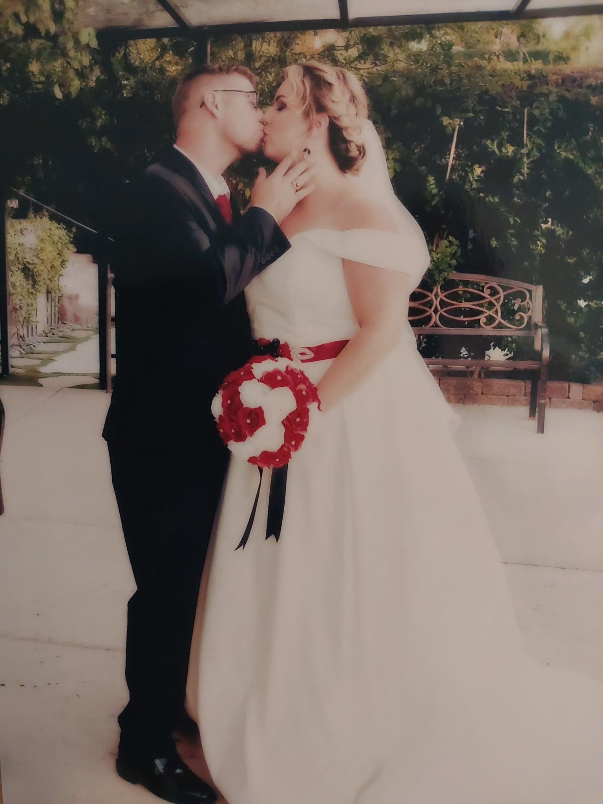

Forever & Always
My Dearest Wife,
Every single day with you feels like a beautiful dream. You are my greatest adventure, my peaceful haven, and the absolute love of my life. This little corner of the internet belongs entirely to us and our cherished memories.
Our Favorite Moments
Polaroids & Notes
Endless Laughs
Your smile lights up my whole world.
Our Special Song
Playing straight from Spotify